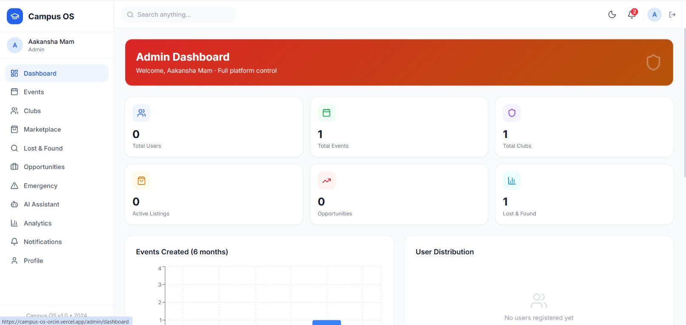
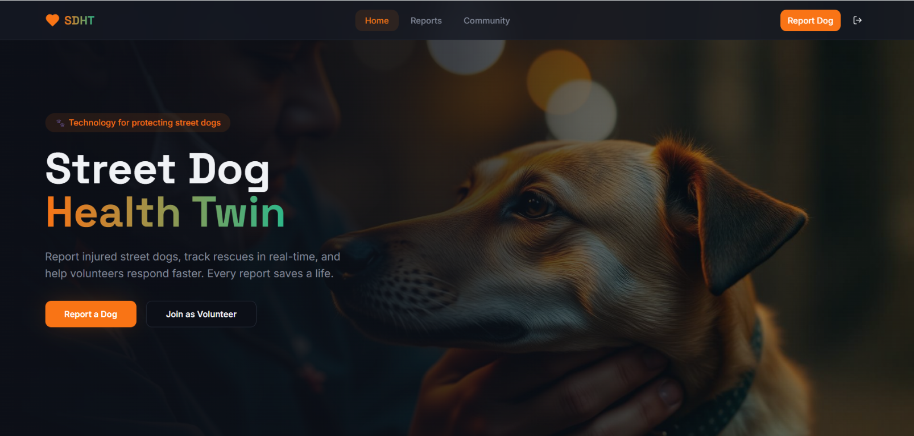
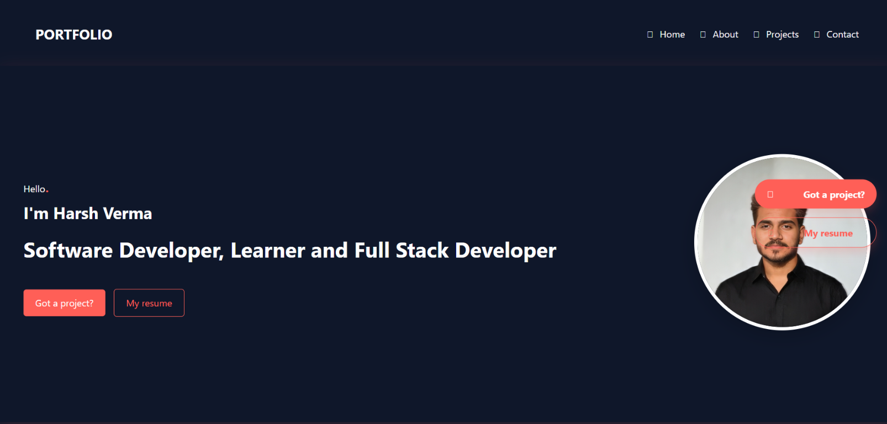

Frontend
- HTML
- CSS
- JavaScript
- React
- Next.js
- UI/UX
Developer · AI/ML Enthusiast
CS student building for the web.
Exploring AI through useful projects.
Tools I like to build with
I’m Harsh, a Computer Science student specializing in AI & Machine Learning. I enjoy building for the web, exploring intelligent systems, and shaping clear, useful interfaces.
My approach is curious and hands-on: understand the problem, keep learning, and make each iteration simpler and more useful.
Explore my toolkit ↘Tools I use and topics I’m actively exploring.
Selected builds exploring campus life, community care, and thoughtful web experiences.



Selected projects, freelance work, and campus leadership.
Personal Projects · Full-Stack · AI/ML
Building full-stack apps and AI-assisted products with React.js, JavaScript, Python, Firebase, Node.js, MongoDB, and APIs—focused on practical digital solutions.
Web Development · Full-Stack Development
Contributing to responsive web apps across frontend and backend, APIs, authentication, databases, testing, debugging, and deployment; exploring AI-assisted product development.
React.js · Node.js · MongoDB · Firebase
Developed an employee attendance app with attendance tracking, GPS verification, dashboards, leave management, reports, and backend integration.
AI · Computer Vision · Digital Health
Built an AI-assisted health monitoring concept for street dogs, combining health records, image-based assessment, volunteer coordination, vaccination tracking, rescue support, and predictive care ideas.
TechFusion · HIET Ghaziabad
Leading college technical and volunteer initiatives, coordinating teams, organizing events, and contributing to student-focused digital solutions and campus projects.
Ideathons · Hackathons · Product Building
Earned wins and runner-up positions in innovation challenges while developing practical AI, web, and social-impact solutions.
Beyond technology, I’ve always been passionate about communication, leadership, stage hosting, and bringing people together.
2024 FIRST HOSTING EXPERIENCE
Hosted and helped organize the college Freshers’ Party as a senior—the event’s sole anchor. Managed stage flow, announcements, audience engagement, and coordination.
2025 CULTURAL & COLLEGE EVENTS
Hosted Cultural Club events and CrossRoad at HIET, along with a farewell for senior students. Continued taking responsibility for stage hosting, audience interaction, and event coordination.
PRESENT LEADERSHIP & ACTIVITIES
An active club member with experience in stage anchoring and public speaking, event coordination, audience engagement, and team leadership.
Multiple Events • Stage Host • Event Organizer • Cultural Club Member
From hosting my first Freshers’ Party to leading cultural events and farewell celebrations, every stage has strengthened my confidence, communication, and leadership.
Thoughtful steps, frequent feedback, and no mystery handoffs.
Understand the problem, people, and constraints.
Set the scope, priorities, and a practical path.
Shape the flow and interface before adding complexity.
Build in small, reusable, well-tested pieces.
Check real use cases, accessibility, and edge cases.
Ship, monitor, and improve from what users teach us.
Wins, ideas, and learning milestones from building technology with purpose.
Specialization in Artificial Intelligence & Machine Learning
Add your institute name, location, and graduation year.
From the first interface sketch to a deployed, working product.
Responsive, accessible web experiences.
Practical AI/ML features shaped around real needs.
Clear flows and interfaces people can use.
Connect services, data, and product workflows.
Bring frontend, backend, and data together.
Get the build online and ready to iterate.